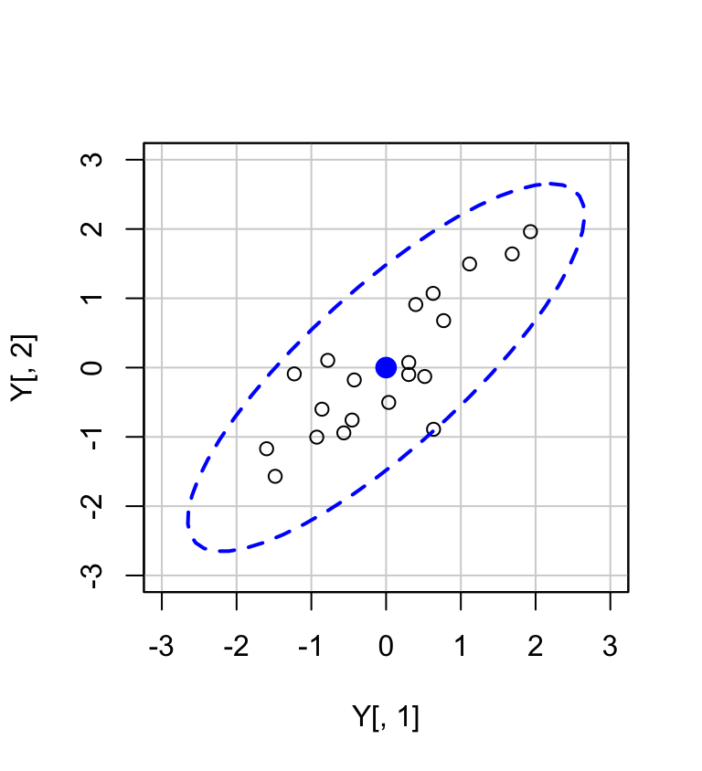
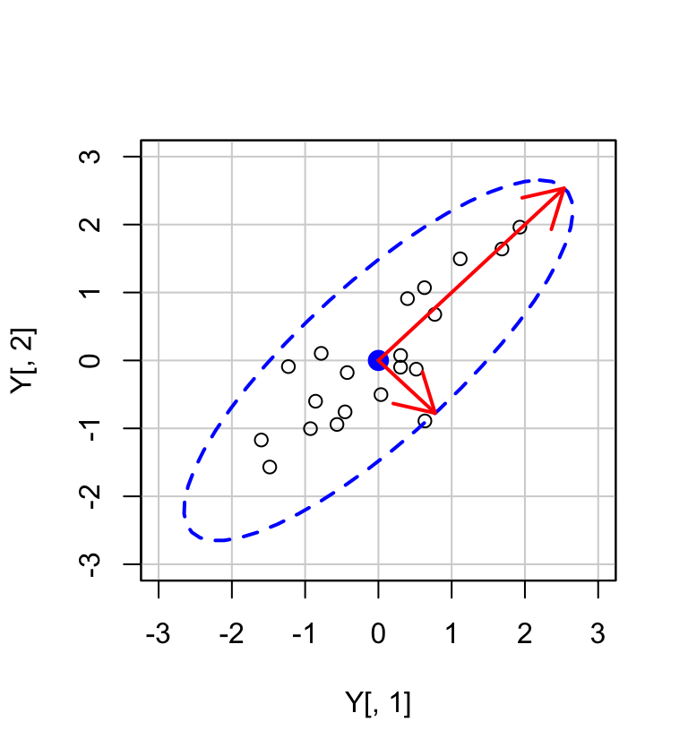

A.2 Matrici
Una matrice costituisce un insieme rettangolare di scalari ordinati per riga e colonna. Può anche essere vista come la raccolta di \(m\) vettori colonna di dimensione \(n\) o come la raccolta di \(n\) vettori riga di dimensione \(m\). Per esempio:
\[ \boldsymbol{A} = \left[ \begin{array}{c c c} a_{11} & a_{12} & a_{13}\\ a_{21} & a_{22} & a_{23} \end{array} \right] \]
In \(\mathsf{R}\) abbiamo
M <- matrix(
c(1, 2, 3, 4, 5, 6),
ncol = 3,
byrow = TRUE
)
M
#> [,1] [,2] [,3]
#> [1,] 1 2 3
#> [2,] 4 5 6A.2.1 Dimensioni della matrice
I numeri interi \(m\) ed \(n\) si dicono dimensioni della matrice, ovvero \(\boldsymbol{A}\) si dice matrice di dimensioni \(m \times n\) o di ordine \(m \times n\). Nel caso presente, la matrice \(\boldsymbol{A}\) ha dimensioni \(2 \times 3\).
A.2.2 Matrice trasposta
Si definisce matrice trasposta di \(\boldsymbol{A}\), e si denota con \(\boldsymbol{A}'\) oppure \(\boldsymbol{A}'\), la matrice \(\boldsymbol{B} = \boldsymbol{A}'\) di ordine \(n \times m\) cui elementi sono:
\[ b_{ij} = a_{ji}, \quad i = 1 \dots m, j = 1 \dots n \]
Per esempio,
\[ \left[ \begin{array}{c c} -2 & 5\\ 3 & 1\\ 7 & -6 \end{array} \right]'= \left[ \begin{array}{c c c} -2 & 3 & 7\\ 5 & 1 & -6 \end{array} \right] \]
A.2.3 Matrice simmetrica
Se accade che \(\boldsymbol{A} = \boldsymbol{A}'\) allora la matrice è detta simmetrica.
\[ \boldsymbol{A} = \left[ \begin{array}{c c c} 7 & 1 & 2\\ 1 & 8 & 3\\ 2 & 3 & 9 \end{array} \right] \]
\((\boldsymbol{A} + \boldsymbol{B})' = (\boldsymbol{A})' + (\boldsymbol{B})'\)
\((\boldsymbol{A} - \boldsymbol{B})' = (\boldsymbol{A})' - (\boldsymbol{B})'\)
\((\boldsymbol{a} + \boldsymbol{b})' = (\boldsymbol{a})' + (\boldsymbol{b})'\)
\((\boldsymbol{a} - \boldsymbol{b})' = (\boldsymbol{a})' - (\boldsymbol{b})'\)
A.2.4 Matrice quadrata o rettangolare
Se \(m = n\) allora la matrice \(\boldsymbol{A}\) si dice quadrata di dimensione \(n\) o di ordine \(n\) altrimenti si dice rettangolare. Le righe di \(\boldsymbol{A}\) sono \([a_{11}\ a_{12}\ a_{13}]\) e \([a_{21}\ a_{22}\ a_{23}]\). Le colonne di \(\boldsymbol{A}\) sono \(\left[\begin{array}{c} a_{11} \\ a_{21} \end{array} \right]\), \(\left[ \begin{array}{c} a_{12} \\ a_{22} \end{array} \right]\) e \(\left[ \begin{array}{c} a_{13} \\ a_{23} \end{array} \right]\).
A.2.5 Diagonale principale
Se \(i\) e \(j\) sono numeri interi con \(1 \leq i \leq m\) e \(1 \leq j \leq n\) allora l’elemento della matrice \(\boldsymbol{A}\) di dimensione \(m \times n\) che si trova in posizione (\(i, j\)) viene indicato con \(a_{ij}\). Gli elementi \(a_{ij}\) di una matrice quadrata \(\boldsymbol{A}\) di ordine \(n\) tali che \(i = j\) sono detti elementi principali o diagonali e formano la cosiddetta diagonale principale di \(\boldsymbol{A}\).
\[ \boldsymbol{A} = \left[ \begin{array}{c c c} a_{11} & a_{12} & a_{13}\\ a_{21} & a_{22} & a_{23}\\ a_{31} & a_{32} & a_{33} \end{array} \right] \]
A.2.6 Matrice diagonale
Se gli elementi \(a_{ij}\) di una matrice quadrata \(\boldsymbol{A}\) sono tali che \(a_{ij} =0\) e \(a_{ii} \neq 0\), allora la matrice \(\boldsymbol{A}\) viene detta matrice diagonale.
\[ \boldsymbol{A} = \left[ \begin{array}{c c c} a_{11} & 0 & 0\\ 0 & a_{22} & 0\\ 0 & 0 & a_{33} \end{array} \right] \]
A.2.7 Matrice identità
Si definisce matrice identità di ordine \(n\) la matrice quadrata diagonale \(\boldsymbol{I}_n\) avente tutti gli elementi principali uguali a \(1\):
\[ \boldsymbol{I}_3 = \left[ \begin{array}{c c c} 1 & 0 & 0\\ 0 & 1 & 0\\ 0 & 0 & 1 \end{array} \right] \]
La matrice identità ha la stessa funzione del numero “1” nel sistema dei numeri reali.
A.2.8 Matrici diagonali e triangolari
Gli elementi di una matrice che si trovano al di sopra della diagonale principale sono detti sopradiagonali, mentre quelli che si trovano al di sotto della stessa diagonale principale sono detti sottodiagonali. Se una matrice ha tutti gli elementi sopradiagonali e sottodiagonali uguali a zero viene detta matrice diagonale. Se invece ha solo gli elementi sopradiagonali nulli allora viene detta triangolare inferiore. Se ha gli elementi sottodiagonali nulli allora è detta triangolare superiore.
A.2.9 Somma e sottrazione
La somma e la sottrazione di due matrici sono operazioni definite elemento per elemento. Per sommare due matrici sommiamo gli elementi corrispondenti. Per sottrarre due matrici sottraiamo gli elementi corrispondenti. Si noti che queste operazioni hanno senso solo se le due matrici hanno le stesse dimensioni (altrimenti queste operazioni non sono definite). Per esempio,
\[ \left[ \begin{array}{c c} -2 & 5\\ 3 & 1\\ 7 & -6 \end{array} \right]+ \left[ \begin{array}{c c} 3 & -2\\ 4 & 5\\ 10 & -3 \end{array} \right]= \left[ \begin{array}{c c} 1 & 3\\ 7 & 6\\ 17 & -9 \end{array} \right] \]
A <- matrix(
c(-2, 5, 3, 1, 7, -6),
nrow = 3, byrow = TRUE
)
A
#> [,1] [,2]
#> [1,] -2 5
#> [2,] 3 1
#> [3,] 7 -6B <- matrix(
c(3, -2, 4, 5, 10, -3),
nrow = 3, byrow = TRUE
)
B
#> [,1] [,2]
#> [1,] 3 -2
#> [2,] 4 5
#> [3,] 10 -3\[ \left[ \begin{array}{c c} -2 & 5\\ 3 & 1\\ 7 & -6 \end{array} \right]- \left[ \begin{array}{c c} 3 & -2\\ 4 & 5\\ 10 & -3 \end{array} \right]= \left[ \begin{array}{c c} -5 & 7\\ -1 & -4\\ -3 & -3 \end{array} \right] \]
A.2.10 Moltiplicazione di scalari e matrici
L’effetto della moltiplicazione di una matrice \(\boldsymbol{A}\) di qualsiasi dimensione per un numero reale b (scalare) è quello di moltiplicare ciascun elemento in \(\boldsymbol{A}\) per b. Questo è equivalente a sommare \(\boldsymbol{A}\) a se stessa b volte. Per esempio,
\[ 3 \left[ \begin{array}{c c} -2 & 5\\ 3 & 1\\ 7 & -6 \end{array} \right]= \left[ \begin{array}{c c} -6 & 15\\ 9 & 3\\ 21 & -18 \end{array} \right] \]
A.2.11 Proprietà della somma e differenza
È facile verificare che la somma e la differenza cosı̀ definite godono delle proprietà commutativa e associativa. Siano \(k\) uno scalare e \(A\) e \(B\) due matrici aventi le stesse dimensioni. Allora
- \(\boldsymbol{A}+ \boldsymbol{B} = \boldsymbol{B} + \boldsymbol{A}\)(Proprietà commutativa)
- \(\boldsymbol{A} + (\boldsymbol{B} + \boldsymbol{C}) = (\boldsymbol{A} + \boldsymbol{B}) + \boldsymbol{C}\) (Proprietà associativa)
- \(k(l\boldsymbol{A}) = (kl)\boldsymbol{A}\)
- \(k(\boldsymbol{A} + \boldsymbol{B}) = k\boldsymbol{A} + k\boldsymbol{B}\)(Proprietà distributiva)
- \((k+l)\boldsymbol{A} = k\boldsymbol{A} + l\boldsymbol{A}\)
- \(1\boldsymbol{A} = \boldsymbol{A}\)
A.2.12 Prodotto di matrici
La moltiplicazione di matrici non è un’operazione intuitiva come la somma e la differenza, ma fornisce uno strumento potente per eseguire una lunga serie di calcoli in un modo molto semplice. L’ordine è importante: il numero delle colonne della prima matrice deve essere uguale al numero di righe della seconda matrice. Quando ciò accade le matrici si dicono conformabili, altrimenti si dicono non conformabili.
Sia \(\boldsymbol{A}\) una matrice \(m \times p\) e \(\boldsymbol{B}\) una matrice \(p \times n\). Il prodotto tra le due matrici \(\boldsymbol{C} = \boldsymbol{AB}\) è la matrice di ordine \(m \times n\) il cui elemento generico è
\[ c_{ij} = \sum_{k=1}^{p} a_{ik}a_{kj}, \quad i = 1 \dots m, j = 1 \dots n \]
Pertanto, il prodotto si effettua riga per colonna. È facile verificare che il prodotto tra matrici gode della proprietà associativa ma in generale non di quella commutativa. Vale invece la seguente proprietà:
\[ (\boldsymbol{AB})' = \boldsymbol{B}'\boldsymbol{A}' \]
Ad esempio, siano \(\boldsymbol{A}\) e \(\boldsymbol{B}\) le seguenti matrici
\[ \left[ \begin{array}{c c c} -2 & 1 & 1\\ 1 & 1 & 4\\ 2 & -3 & 2 \end{array} \right] \quad \text{e} \quad \left[ \begin{array}{c c c} 3 & -2 &1\\ 4 & 5 & 0\\ 1 & -3 & 1 \end{array} \right] \]
Calcoliamo la matrice \(\boldsymbol{C} = \boldsymbol{AB}\). L’elemento \(c_{ij}\) è uguale alla somma dei prodotti degli elementi della i-esima riga di \(\boldsymbol{A}\) per la j-esima colonna di \(\boldsymbol{B}\).
\(c_{11} = (-2) \cdot 3 + 1 \cdot 4 + 1 \cdot 1 = -1\)
\(c_{12} = (-2) \cdot (-2) + 1 \cdot 5 + 1 \cdot (-3) = 6\)
\(c_{13} = (-2) \cdot 3 + 1 \cdot 0 + 1 \cdot 1 = -1\)
\(c_{21} = 1 \cdot 3 + 1 \cdot 4 + 4 \cdot 1 = 11\)
\(c_{22} = 1 \cdot (-2) + 1 \cdot 5 + 4 \cdot (-3) = -9\)
\(c_{23} = 1 \cdot 3 + 1 \cdot 0 + 4 \cdot 1 = 5\)
\(c_{31} = 2 \cdot 3 +(-3) \cdot 4 + 2 \cdot 1 = -4\)
\(c_{32} = 2 \cdot (-2) +(-3) \cdot 5 + 2 \cdot (-3) = -25\)
\(c_{33} = 2 \cdot 1 + (-3) \cdot 0 + 2 \cdot 1 = 4\)
In definitiva
\[ \boldsymbol{C} = \left[ \begin{array}{c c c} -1 & 6 & -1\\ 11 & -9 & 5\\ -4 & -25 & 4 \end{array} \right] \]
A <- matrix(
c(-2, 1, 1, 1, 1, 4, 2, -3, 2),
nrow = 3,
byrow = TRUE
)
A
#> [,1] [,2] [,3]
#> [1,] -2 1 1
#> [2,] 1 1 4
#> [3,] 2 -3 2B <- matrix(
c(3, -2, 1, 4, 5, 0, 1, -3, 1),
nrow = 3,
byrow = TRUE
)
B
#> [,1] [,2] [,3]
#> [1,] 3 -2 1
#> [2,] 4 5 0
#> [3,] 1 -3 1Calcolando il prodotto \(\boldsymbol{D} = \boldsymbol{BA}\) si trova invece:
\[ \boldsymbol{D} = \left[ \begin{array}{c c c} -6 & -2 & -3\\ -3 & 9 & 24\\ -3 & -5 & -9 \end{array} \right] \]
da cui risulta evidente che \(\boldsymbol{AB} \neq \boldsymbol{BA}\).
A.2.13 Proprietà del prodotto di matrici
- \(\boldsymbol{A}(\boldsymbol{B} + \boldsymbol{C}) = \boldsymbol{AB} + \boldsymbol{AC}\)
- \((\boldsymbol{A} + \boldsymbol{B})\boldsymbol{C} = \boldsymbol{AC} + \boldsymbol{BC}\)
- Per qualunque matrice \(\boldsymbol{A}\), \(\boldsymbol{A}'\boldsymbol{A}\) sarà una matrice quadrata.
- \((\boldsymbol{AB})' = \boldsymbol{B}'\boldsymbol{A}'\)
A.2.14 Casi particolari
La matrice identità è l’elemento neutro per il prodotto, cioè se \(\boldsymbol{I}\) è una matrice \(n \times n\) si ha
\[ \boldsymbol{A} \boldsymbol{I}_n = \boldsymbol{I}_n \boldsymbol{A} = \boldsymbol{A}. \]
Per esempio,
\[ \boldsymbol{IA} = \left(% \begin{array}{cc} 1 & 0 \\ 0 & 1 \\ \end{array}% \right) \left(% \begin{array}{ccc} 2 & 3 & -1 \\ 1 & 4 & 7 \\ \end{array}% \right)= \left(% \begin{array}{ccc} 2 & 3 & -1 \\ 1 & 4 & 7 \\ \end{array}% \right) \]
In R la matrice identità si crea nel modo seguente.
Dunque
A <- matrix(
c(2, 3, -1, 1, 4, 7),
nrow = 2, byrow = TRUE
)
A
#> [,1] [,2] [,3]
#> [1,] 2 3 -1
#> [2,] 1 4 7Un secondo caso particolare si verifica quando una matrice è costituita da un’unica colonna o un’unica riga. Se la matrice \(\boldsymbol{A}\) si riduce ad una sola colonna (o una sola riga) e viene detta vettore colonna (o riga) ad \(m\) elementi o componenti. Un vettore colonna è una matrice \(n \times 1\); un vettore riga è una matrice \(1 \times m\). Se \(\boldsymbol{a}\) è un vettore colonna di \(m\) elementi allora \(\boldsymbol{a}'\) è un vettore riga sempre di \(m\) elementi.
Per le operazioni tra vettori valgono le stesse regole viste per le matrici, cioè la somma e la differenza sono possibili tra vettori dello stesso tipo e con lo stesso numero di componenti. La moltiplicazione è possibile tra una matrice e un vettore di dimensioni appropriate, e tra due vettori di dimensioni appropriate. In questo secondo caso, distinguiamo tra prodotto interno e prodotto esterno.
A.2.15 Operazioni tra vettori
Il prodotto interno (o scalare) di un vettore \(\boldsymbol{a}'\) \(1 \times n\) che premoltiplica un vettore \(\boldsymbol{b}\) \(n \times 1\) produce uno scalare:
\[ \boldsymbol{a}'\boldsymbol{b} = \sum_{i=1}^{n}a_i b_i \]
Dati due vettori \(\boldsymbol{a}\), \(\boldsymbol{b}\) di ordini \(n \times 1\) e \(m \times 1\), il prodotto esterno \(\boldsymbol{C} = \boldsymbol{ab}'\) è una matrice \(n \times m\) di elementi \(c_{ij} = a_i b_j\).
A.2.16 Prodotto interno
Siano \(\boldsymbol{a}\) e \(\boldsymbol{b}\) i seguenti vettori:
\[ \left[ \begin{array}{c} 1 \\ 2 \\ 3 \end{array} \right] \quad e \quad \left[ \begin{array}{c} -1 \\ -2 \\ 4 \end{array} \right] \]
Il prodotto interno è:
\[ \boldsymbol{a}'\boldsymbol{b}= 1 \cdot (-1) + 2 \cdot (-2) + 3 \cdot 4 = 7 \]
Osserviamo che tale operazione gode della proprietà commutativa, poichè \(\boldsymbol{b}'\boldsymbol{a}=7\).
A.2.17 Prodotto esterno
Il prodotto esterno è la matrice
\[ \boldsymbol{C} = \boldsymbol{a}\boldsymbol{b}'= \left[ \begin{array}{c c c} -1 & -2 & 4\\ -2 & -4 & 8\\ -3 & -6 & 12 \end{array} \right] \]
Tale prodotto non gode della proprietà commutativa, infatti:
\[ \boldsymbol{D} = \boldsymbol{b}\boldsymbol{a}'= \left[ \begin{array}{c c c} -1 & -2 & -3\\ -2 & -4 & -6\\ 4 & 8 & 12 \end{array} \right] \]
A.2.18 Traccia di una matrice
Si definisce traccia di una matrice quadrata \(\boldsymbol{A}\) \(n \times n\), e si denota con \(tr(\boldsymbol{A})\) la somma degli elementi sulla diagonale principale di \(\boldsymbol{A}\):
\[ tr(\boldsymbol{A}) = \sum_{i=1}^{n} a_{ii} \]
La traccia gode delle seguenti proprietà:
\[ \begin{aligned} &tr(\rho \boldsymbol{A}) = \rho tr( \boldsymbol{A}) \notag \\ &tr(\boldsymbol{A} + \boldsymbol{B}) = tr( \boldsymbol{A})+tr( \boldsymbol{B}) \notag \\ &tr(\boldsymbol{A}') = tr( \boldsymbol{A}) \notag \\ &tr(\boldsymbol{AB}) = tr( \boldsymbol{BA}) \notag\end{aligned} \]
Per esempio, sia
\[ \boldsymbol{A} = \left[ \begin{array}{c c c} 7 & 1 & 2\\ 1 & 8 & 3\\ 2 & 3 & 9 \end{array} \right] \]
allora
\[ tr(\boldsymbol{A}) = 7 + 8 + 9 = 24. \]
A <- matrix(
c(7, 1, 2, 1, 8, 3, 2, 3, 9),
nrow = 3,
byrow = TRUE
)
A
#> [,1] [,2] [,3]
#> [1,] 7 1 2
#> [2,] 1 8 3
#> [3,] 2 3 9A.2.18.0.1 Dipendenza lineare
Si consideri la matrice
\[ \boldsymbol{A}= \left(% \begin{array}{ccc} 1 & 1 & 1 \\ 3 & 1 & 5 \\ 2 & 3 & 1 \\ \end{array}% \right) \]
Siano \(\boldsymbol{c}_1\), \(\boldsymbol{c}_2\), \(\boldsymbol{c}_3\) le colonne di \(\boldsymbol{A}\). Si noti che
\[ 2\boldsymbol{c}_1 + -\boldsymbol{c}_2 + - \boldsymbol{c}_3 = \boldsymbol{0} \]
dove \(\boldsymbol{0}\) è un vettore (\(3 \times 1\)) di zeri.
Dato che le 3 colonne di \(\boldsymbol{A}\) possono essere combinate linearmente in modo da produrre un vettore \(\boldsymbol{0}\) vi è chiaramente una qualche forma di relazione, o dipendenza, tra le informazioni nelle colonne. Detto in un altro modo, sembra esserci una qualche duplicazione delle informazione nelle colonne. In generale, si dice che \(k\) colonne \(\boldsymbol{c}_1, \boldsymbol{c}_2, \dots \boldsymbol{c}_k\) di una matrice sono linearmente dipendenti se esiste un insieme di valori scalari \(\lambda_1, \dots, \lambda_k\) tale per cui
\[ \lambda_1 \boldsymbol{c}_1 + \dots + \lambda_k \boldsymbol{c}_k=\boldsymbol{0} \]
e almeno uno dei valori \(\lambda_i\) non è uguale a 0.
La dipendenza lineare implica che ciascun vettore colonna è una combinazione degli altri. Per esempio
\[ \boldsymbol{c}_k= -(\lambda_1 \boldsymbol{c}_1 + \dots + \lambda_{k-1} \boldsymbol{c}_{k-1})/\lambda_k \]
Questo implica che tutta “l’informazione” della matrice è contenuta in un sottoinsieme delle colonne – se \(k-1\) colonne sono conosciute, l’ultima resta determinata. È in questo senso che abbiamo detto che l’informazione della matrice veniva “duplicata”.
Se l’unico insieme di valori scalari \(\lambda_i\) che soddisfa l’equazione
\[ \lambda_1 \boldsymbol{c}_1 + \dots + \lambda_k \boldsymbol{c}_k=\boldsymbol{0} \]
è un vettore di zeri, allora questo significa che non vi è alcuna relazione tra le colonne della matrice. Le colonne si dicono linearmente indipendenti, nel senso che non contengono alcuna “duplicazione” di informazione.
A.2.19 Rango di una matrice
Il rango della matrice è il massimo numero di vettori colonna linearmente indipendenti che possono essere selezionati dalla matrice. In maniera equivalente, il rango di una matrice può essere definito come il massimo numero di vettori riga linermente indipendenti. Il rango minimo di una matrice è 1, il che significa che vi è una colonna tale per cui le altre colonne sono dei multipli di questa. Per l’esempio precedente, il rango della matrice \(\boldsymbol{A}\) è 2.
Se la matrice è quadrata, \(\boldsymbol{A}_{n \times n}\), ed è costituita da vettori tutti indipendenti tra di loro, allora il suo rango è \(n\). Se, invece, la matrice è rettangolare, \(\boldsymbol{A}_{m \times n}\), allora il suo rango può essere al massimo il più piccolo tra i due valori m ed n, cioè:
\[ r(\boldsymbol{A}_{m \times n}) \leq min(m,n) \]
A.2.20 Matrice inversa
L’inversa di una matrice quadrata è l’analogo del reciproco per gli scalari. Se \(b\) è uno scalare e \(b=0\), allora il reciproco di \(b\), \(1/b\) non esiste – non è definito. Allo stesso modo, vi sono delle matrici che “si comportano come lo 0” e per le quali l’inversa non è definita. Tali matrici si dicono singolari.
Sia \(\boldsymbol{A}\) una matrice quadrata di dimensione \(n\). Si definisce matrice inversa la matrice, denotata con \(\boldsymbol{A}^{-1}\), che premoltiplicata o postmoltiplicata per \(\boldsymbol{A}\) fornisce la matrice identità:
\[ \boldsymbol{A}\boldsymbol{A}^{-1}=\boldsymbol{A}^{-1}\boldsymbol{A}=\boldsymbol{I} \]
La condizione per l’esistenza e l’unicità di \(\boldsymbol{A}^{-1}\) è che le colonne di \(\boldsymbol{A}\) siano linearmente indipendenti.
Nel caso di una matrice diagonale la determinazione della matrice inversa risulta immediata: \(\boldsymbol{D}^{-1}= diag(1/d_1, \dots, 1/d_n)\). Nel caso di una matrice non diagonale, la matrice inversa si trova usando il computer dove complicate formule per matrici di qualunque dimensione sono implementate in vari software. Solo per matrici di piccole dimensioni sono disponibili semplici espressioni analitiche per il calcolo della matrice inversa.
Per esempio, sia
\[ \boldsymbol{A} = \left[ \begin{array}{c c} 3 & 4 \\ 2 & 6 \end{array} \right] \]
allora
\[ \boldsymbol{A}^{-1} = \left[ \begin{array}{c c} .6 & -.4 \\ -.2 & .3 \end{array} \right] \]
e
\[ \boldsymbol{A}\boldsymbol{A}^{-1} =\left[ \begin{array}{c c} 3 & 4 \\ 2 & 6 \end{array} \right] \left[ \begin{array}{c c} .6 & -.4 \\ -.2 & .3 \end{array} \right] = \left[ \begin{array}{c c} 1 & 0 \\ 0 & 1 \end{array} \right] \]
Se \(\boldsymbol{A}\) e \(\boldsymbol{B}\) sono due matrici non singolari aventi le stesse dimensioni, allora l’inversa del loro prodotto è uguale al prodotto delle loro inverse nella sequenza opposta:
\[ (\boldsymbol{AB})^{-1}=\boldsymbol{B}^{-1}\boldsymbol{A}^{-1} \]
L’inversa della trasposta di una matrice non singolare è uguale alla trasposta dell’inversa:
\[ (\boldsymbol{A}')^{-1}=(\boldsymbol{A}^{-1})' \]
A.2.21 Determinante di una matrice
Sia \(\boldsymbol{A}\) una matrice quadrata. Il determinante di \(\boldsymbol{A}\) è uno scalare, \(|\boldsymbol{A}|\), il cui valore assoluto misura il volume del parallelepipedo delimitato dalle colonne di \(\boldsymbol{A}\). Nel caso della matrice identità il volume è pari a 1, per cui \(|\boldsymbol{I}| =1\). Per una matrice diagonale \(\boldsymbol{D} = diag(d_1, \dots, d_n)\) si ha
\[ |\boldsymbol{D}| = d_1 \cdot d_2, \dots, d_n = \prod_{i=1}^{n}d_i \]
Per una matrice \(2 \times 2\)
\[ \boldsymbol{A} = \left[ \begin{array}{c c} a_{11}& a_{12} \\ a_{21} & a_{22} \end{array} \right] \]
il determinante di \(\boldsymbol{A}\) vale:
\[ |\boldsymbol{A}| = a_{11}a_{22}-a_{12}a_{21} \]
Per esempio:
\[ \boldsymbol{A} = \left[ \begin{array}{c c} 1 & -2 \\ 3 & 9 \end{array} \right] \quad |\boldsymbol{A}| = 1\cdot 9 - (-2) \cdot 3 = 15 \]
Il determinante è definito anche per matrici di dimensioni superiori anche se, in quel caso, i calcoli sono molto più complessi (una volta ancora, si usi il computer!).
A.2.22 Determinante e inversa
Vi è una relazione tra il determinante e l’inversa di una matrice. Se la matrice \(\boldsymbol{A}\) ha dimensioni \(2 \times 2\) l’inversa di \(\boldsymbol{A}\) si trova nel modo seguente
\[ \boldsymbol{A}^{-1} = \frac{1}{|\boldsymbol{A}|} \left[ \begin{array}{c c} a_{22} & -a_{12} \\ -a_{21} & a_{11} \end{array} \right] \]
Anche per le matrici di dimensioni maggiori la matrice inversa è definita nei termini del determinante, ma le formule di calcolo sono molto più complesse.
Per esempio, sia
\[ \boldsymbol{A} = \left[ \begin{array}{c c} 3 & 4 \\ 2 & 6 \end{array} \right] \]
allora
\[ \boldsymbol{A}^{-1} = \frac{1}{10} \left[ \begin{array}{c c} 6 & -4 \\ -2 & 3 \end{array} \right]= \left[ \begin{array}{c c} .6 & -.4 \\ -.2 & .3 \end{array} \right] \]
In precedenza abbiamo detto che, in alcuni casi, una matrice “si comporta come lo 0.” Il determinante di una matrice è ci dice quando una matrice “si comporta come lo 0.” \(|\boldsymbol{A}| = 0\), infatti, se una riga (o una colonna) è una combinazione lineare di due (o più) righe (o colonne) di \(\boldsymbol{A}\).
Per esempio, nel caso di una matrice (\(2 \times 2\))
\[ \boldsymbol{A} = \left( \begin{array}{c c} a_{11}& a_{12} \\ a_{21} & a_{22} \end{array} \right) \]
supponiamo che
\[ \left(% \begin{array}{c} a_{11} \\ a_{21} \\ \end{array}% \right)=2 \left(% \begin{array}{c} a_{12} \\ a_{22} \\ \end{array}% \right)\]
Allora
\[ \boldsymbol{A} = \left( \begin{array}{c c} 2a_{12}& a_{12} \\ 2a_{22} & a_{22} \end{array} \right) \]
e
\[ |\boldsymbol{A}| = 2a_{12}a_{22}-2a_{12}a_{22}=0 \]
In conclusione, se il determinante è uguale a zero, allora la matrice inversa non esiste. Nel caso di una matrice (\(2 \times 2\)), infatti, la formula dell’inversa richiede la divisione per \(a_{11}a_{22}-a_{12}a_{21}\) che, nel caso di una matrice singolare, è uguale a zero.
A.2.23 Proprietà del determinante
- \(|\boldsymbol{A}'| = |\boldsymbol{A}|\).
- Se \(\boldsymbol{A}\) contiene una colonna o una riga i cui elementi sono tutti 0, allora \(|\boldsymbol{A}|=0\).
- Se \(\boldsymbol{A}\) contiene due colonne (o righe) identiche, allora \(|\boldsymbol{A}|=0\).
- \(|\boldsymbol{A}| = 0\) se una riga (o una colonna) è combinazione lineare di due (o più) righe (o colonne) di \(\boldsymbol{A}\).
- \(|\boldsymbol{A}| = 1/|\boldsymbol{A}^{-1}|\).
- \(|\boldsymbol{I}| = 1\).
- \(|\boldsymbol{A} \boldsymbol{B}| = |\boldsymbol{A}| |\boldsymbol{B}|\).
Per una matrice quadrata \(\boldsymbol{A}\), le seguenti affermazioni sono equivalenti: \(\boldsymbol{A}\) è non singolare, \(|\boldsymbol{A}|\neq 0\), \(\boldsymbol{A}^{-1}\) esiste.
A.2.24 Radici e vettori latenti
Dal determinante di una matrice si possono ricavare le radici latenti o autovalori (denotati da \(\lambda_i\)) e i vettori latenti o autovettori della matrice. Alle nozioni di autovalore e autovettore verrà qui fornita un’interpretazione geometrica.
Simuliamo di dati di due variabili associate tra loro:
library("car")
set.seed(123456)
npoints <- 20
x <- as.numeric(scale(rnorm(npoints, 0, 1)))
y <- as.numeric(scale(3 * x + rnorm(npoints, 0, 2)))
mean(x)
#> [1] 1.076511e-17
mean(y)
#> [1] -1.872959e-17
cor(x, y)
#> [1] 0.8291033Disegnamo il diagramma di dispersione con un ellisse che contiene la nube di punti:
Y <- cbind(x, y)
car::dataEllipse(
Y[, 1], Y[, 2],
levels = 0.95,
lty = 2,
ylim = c(-3, 3),
xlim = c(-3, 3)
)
Se racchiudiamo le osservazioni (\(v_1, v_2\)) con un’ellisse, allora la lunghezza dei semiassi maggiori e minori dell’ellisse sarà proporzionale a \(\sqrt{\lambda_1}\) e \(\sqrt{\lambda_2}\). L’asse maggiore è la linea passante per il punto (\(\bar{v_1}, \bar{v_2}\)) nella direzione determinata dal primo autovettore \(\boldsymbol{a}_1'\) con pendenza uguale a \(a_{12}/a_{11}\). L’asse minore è la linea passante per il punto (\(\bar{v_1}, \bar{v_2}\)) nella direzione determinata dal secondo autovettore \(\boldsymbol{a}_2\).
Calcoliamo ora gli autovettori e gli autovalori:
Disegniamo gli assi dell’ellisse:
car::dataEllipse(
Y[, 1], Y[, 2],
levels = 0.95,
lty = 2,
ylim = c(-3, 3),
xlim = c(-3, 3)
)
k <- 2.65
arrows(
0, 0,
k * sqrt(ee$values[1]) * ee$vectors[1],
k * sqrt(ee$values[1]) * ee$vectors[2],
code = 2,
col = "red",
lwd = 2
)
arrows(
0, 0,
k * sqrt(ee$values[2]) * ee$vectors[1],
k * sqrt(ee$values[2]) * -ee$vectors[2],
code = 2,
col = "red",
lwd = 2
)
Tale analisi si può estendere a qualunque numero di variabili. Per esempio, nel caso di tre variabili, possiamo pensare di disegnare un ellisoide attorno ad una nube di punti nello spazio tridimensionale. Anche in questo caso, gli autovalori e gli associati autovettori corrisponderanno agli assi dell’elissoide.
A.2.25 Scomposizione spettrale di una matrice
Data una matrice quadrata e simmetrica di dimensione \(n\), \(\boldsymbol{A}\), esistono una matrice diagonale \(\boldsymbol{\Lambda}\) e una matrice ortogonale \(\boldsymbol{V}\) tali che
\[\boldsymbol{A} =\boldsymbol{V} \boldsymbol{\Lambda} \boldsymbol{V}',\] dove
- \(\boldsymbol{\Lambda}\) è una matrice diagonale i cui elementi sono gli autovalori di \(\boldsymbol{A}\): \(\boldsymbol{\Lambda} = diag(\lambda_1, \lambda_2, \dots, \lambda_n)\);
- \(\boldsymbol{V}\) è una matrice ortogonale le cui colonne \((v_1, v_2, \dots, v_p)\) sono gli autovettori di \(\boldsymbol{A}\) associati ai rispettivi autovalori.
In maniera equivalente
\[\boldsymbol{A} \boldsymbol{V} = \boldsymbol{\Lambda} \boldsymbol{V}'.\]
Premoltiplicando entrambi i membri per \(\boldsymbol{V}'\) si ottiene
\[\boldsymbol{V}'\boldsymbol{A} \boldsymbol{V} = \boldsymbol{\Lambda},\]
da cui l’affermazione che la matrice degli autovettori diagonalizza \(\boldsymbol{A}\).
Per esempio,
sigma <- matrix(
data = c(1, 0.5, 0.5, 1.25),
nrow = 2,
ncol = 2
)
sigma
#> [,1] [,2]
#> [1,] 1.0 0.50
#> [2,] 0.5 1.25out <- eigen(sigma)
out
#> eigen() decomposition
#> $values
#> [1] 1.6403882 0.6096118
#>
#> $vectors
#> [,1] [,2]
#> [1,] 0.6154122 -0.7882054
#> [2,] 0.7882054 0.6154122A.2.26 Autovalori e determinante
Il determinante di una matrice è il prodotto degli autovalori:
\[\begin{aligned} |\boldsymbol{A}| &= \prod_{i=1}^{p} \lambda_i. \notag \end{aligned}\]
La traccia di una matrice è uguale alla somma degli autovalori:
\[\begin{aligned} tr(\boldsymbol{A}) &= \sum_{i=1}^{p} \lambda_i. \notag \end{aligned}\]
sigma <- matrix(data = c(1, 0.5, 0.5, 2), nrow = 2, ncol = 2)
sigma
#> [,1] [,2]
#> [1,] 1.0 0.5
#> [2,] 0.5 2.0
out <- eigen(sigma)
out
#> eigen() decomposition
#> $values
#> [1] 2.2071068 0.7928932
#>
#> $vectors
#> [,1] [,2]
#> [1,] 0.3826834 -0.9238795
#> [2,] 0.9238795 0.3826834La traccia di una matrice è uguale alla somma degli autovalori:
Il determinante di una matrice è il prodotto degli autovalori:
Gli autovalori di \(\boldsymbol{A}^{-1}\) sono i reciproci degli autovalori di \(\boldsymbol{A}\); gli autovettori sono coincidenti.